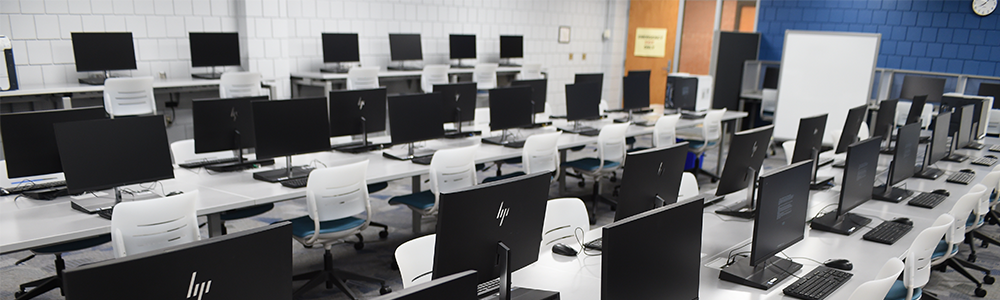
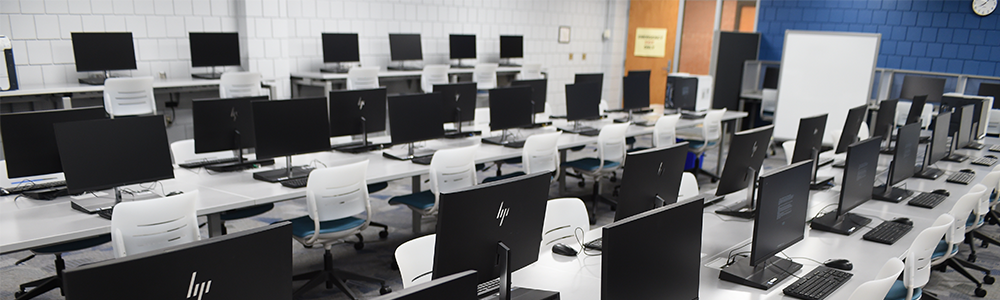

Established in 2015, TechBridge College focuses on computing and information technology education. We offer programmes in Computer Science, Software Engineering, and Information Technology. Our courses are designed to equip students with strong theoretical knowledge and practical skills.
The School of Computing aims to prepare students for future careers in technology through hands-on learning, real projects, and guidance from experienced lecturers. We encourage innovation, problem-solving, and continuous learning.
 
